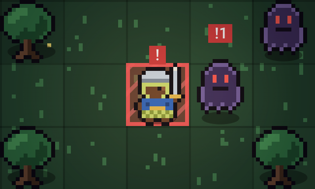
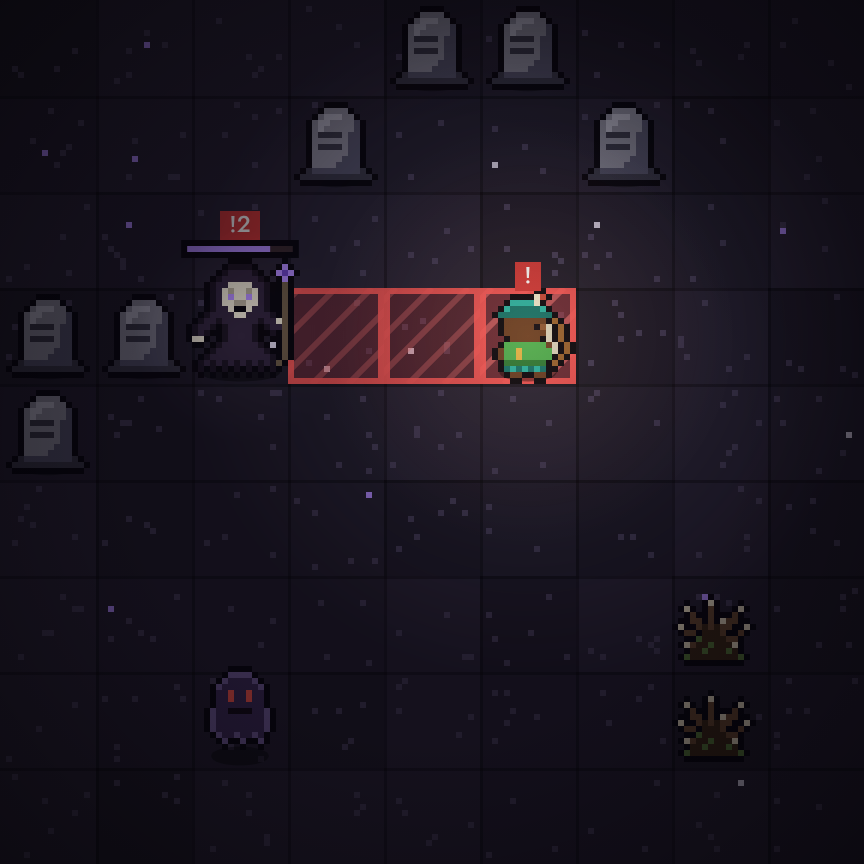

Axé é um jogo de tática por turnos, inspirado na Umbanda e na cosmologia iorubá. Filhos de santo contra os Ajogun, em seis terreiros, até Ikú.
Você faz uma ação e depois todos os inimigos agem. Andar contra um inimigo é golpeá-lo.
Todo ataque é avisado uma rodada antes. As casas em vermelho serão atingidas: saia delas, ou derrote quem vai bater antes que ele aja.

Os golpes dos Ajogun ferem qualquer um nas casas marcadas, inclusive outros Ajogun. Empurrar uma criatura contra a pedra, contra outra criatura ou para dentro do rio também fere. Boa parte do jogo é fazer os inimigos se destruírem.
| Setas ou WASD | Andar e golpear |
|---|---|
| Espaço | Habilidade: escolha a direção e aperte de novo |
| E | Esperar uma rodada |
| Esc | Cancelar ou pausar |
| Tocar numa casa vizinha | Andar e golpear |
|---|---|
| Deslizar o dedo | Andar na direção do gesto |
| Segurar o dedo numa casa | Ver o que há nela |
| Botão da habilidade | Toque nele, depois na direção, e confirme |
Seis terreiros, em 10 a 15 minutos. Entre um e outro, na encruzilhada, Exu abre os caminhos e você escolhe uma dádiva ou um banho de ervas.
Entrada da Mata2 ondas
Clareira de Oxóssi2 ondas
Remanso de Oxum3 ondas
Cachoeira, com Ègbà3 ondas
Pedreira3 ondas
Portão de IkúIkú, a Morte
Ikú recua para o Oruncerca de 12 minutos
Cada filho de santo carrega o axé de um orixá e luta de um jeito. Escolha um e veja.

Axé é uma homenagem à cosmologia iorubá e à Umbanda. A palavra quer dizer força: a energia que move as coisas, que se pede e se oferece nos terreiros.
Os heróis são filhos de santo que carregam o axé de seus orixás. Ogum, que abre os caminhos. Oxóssi, o caçador de uma flecha só. Xangô, do trovão e da justiça. Iansã, dos ventos.
Os inimigos são os Ajogun, que na tradição iorubá trazem perda, encrenca, doença, maldição, paralisia e morte, e os kiumbas, espíritos obsessores da Umbanda. Exu aparece como o guardião da encruzilhada, que abre os caminhos entre um terreiro e outro. Nunca como vilão.
O jogo não reproduz ritos e não pretende falar por nenhuma casa ou tradição.
Laroyê, e bom caminho.
Jornadas com semente escolhida não contam para os recordes.
Objetivo. Feche os seis terreiros derrotando todas as ondas de inimigos. No último, enfrente Ikú, a Morte.
Turnos. Você faz uma ação e depois todos os inimigos agem. Andar contra um inimigo é golpeá-lo.
Casas vermelhas. Todo ataque é avisado uma rodada antes. Saia da casa marcada, ou derrote o inimigo antes que ele aja.
Fogo amigo. Os golpes dos Ajogun ferem qualquer um nas casas marcadas, inclusive outros Ajogun. Empurrões contra pedras, outras criaturas e o rio também ferem.
Ondas. Marcas roxas no chão mostram onde a próxima onda vai surgir. Ela chega quando a anterior cai, ou quando o tempo acaba.
Encruzilhada. Entre terreiros, escolha uma dádiva que muda o seu jeito de lutar, ou um banho de ervas para curar 2 de vida.
Pontuação. Terreiros rápidos, sem dano e com inimigos derrotados pelos próprios aliados rendem mais axé. Provações multiplicam tudo.
| Setas ou WASD | Andar e golpear |
|---|---|
| Espaço ou Q | Habilidade: escolha a direção e aperte de novo |
| E | Esperar uma rodada |
| Esc | Cancelar ou pausar |
| M | Ligar ou desligar o som |
| Tocar numa casa vizinha | Andar e golpear |
|---|---|
| Deslizar o dedo | Andar na direção do gesto |
| Segurar o dedo numa casa | Ver o que há nela |
| Botão da habilidade | Toque nele, depois na direção, e toque de novo para confirmar |